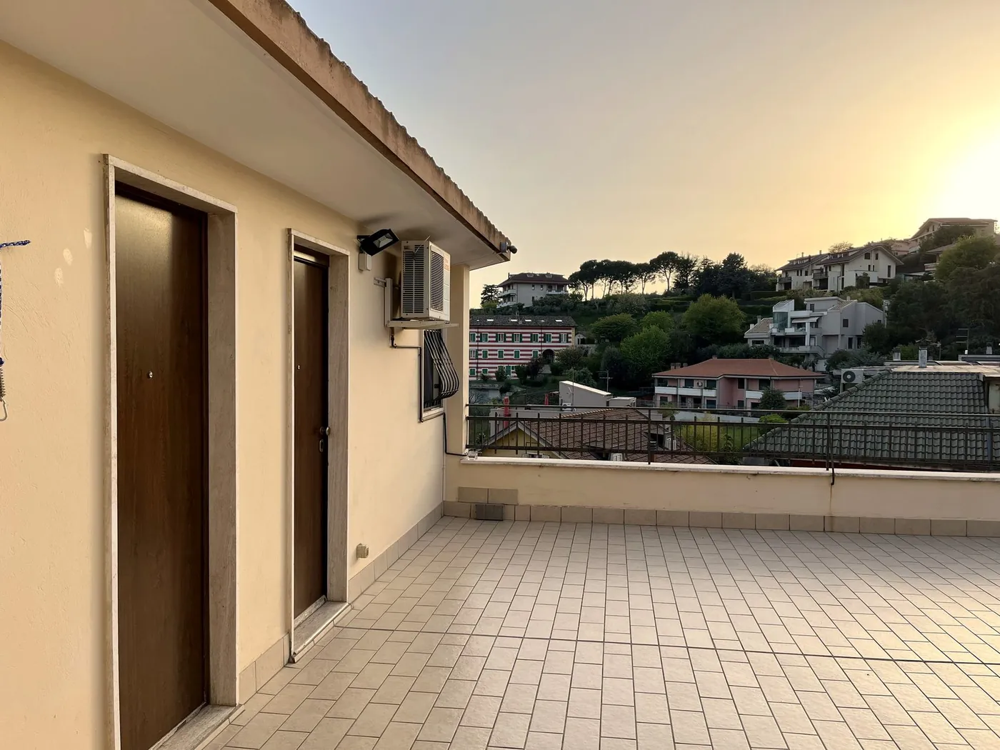

On the hill, with Ascoli below you
There is a hill above Ascoli from which the travertine city looks as though it had been set down among the mountains. The refuge is up there, at Via Monte Ascensione 9, at the northern entrance to town: high enough for the view and the silence, close enough to walk down into the centre.
You arrive, you park freely along the street — we are outside the restricted traffic zone — and the car stays put for your whole stay. You walk down to the Solestà quarter, cross the Roman Bridge, and in ten to fifteen minutes you are among the squares. On the way back, a gentle climb leaves the bustle behind and pays you with quiet.
Pick your dates
Enter your dates below and see the exact rate for your stay straight away.
Rather talk it through? WhatsApp · info@viviascoli.com
A whole apartment, on the hill above Ascoli
Forty square metres all yours at Via Monte Ascensione 9: double bedroom, equipped kitchen, private bathroom and a terrace over the rooftops of the old town.
A loft, not a room
The whole apartment is at your disposal, on the third and top floor of a quiet building: reaching it by the shared stairs gives you complete privacy. Full kitchen, washing machine, air conditioning, Wi-Fi. Ideal for a couple, with a cot or small bed on request for little ones.
See the spacesPark once and leave it
The area sits outside the restricted traffic zone and you park freely along the street: you arrive, you park, and for the rest of your stay you see Ascoli on foot. For bikes, e-bikes and motorbikes there is covered storage on request.
If you arrive on two wheelsFifteen minutes from the Popolo
You walk down to the Solestà quarter, cross the Roman Bridge and you are among the travertine squares. On the way back, a gentle climb leaves the bustle behind and pays you with quiet and a view.
Three days in AscoliIf you arrive on foot
The hill sits at the northern entrance to town, on the route of the Cammino dei Cappuccini and the Cammino Francescano della Marca. Hot shower, washing machine, a real bed and a stamp for your credential.
The walking route pagesFrequently asked questions
What guests ask us before booking.
Where do you park in Ascoli Piceno?
The old town is a restricted traffic zone. The easy parking is just outside the walls and in the hillside areas, where you park freely along the street. Staying outside the zone is the simplest way to leave the car still and see the city on foot.
How far is the hill from the centre?
Ten to fifteen minutes on foot: down to Solestà, across the Roman Bridge, and you are a couple of minutes from Piazza del Popolo.
Where should I stay during the Quintana?
During the Giostra, in July and August, the centre is full and closed to traffic: staying just outside the walls lets you reach the procession on foot and get back easily. These are the busiest two weeks of the year, so move early.
Can I bring a bike or a motorbike?
Yes: covered storage is available on request, so bikes, e-bikes and motorbikes spend the night under cover. The area is outside the restricted zone, so you come and go freely.
How many people can sleep here?
The apartment is designed for two, with a cot or small bed on request for a child. Forty square metres with a double bedroom, equipped kitchen and private bathroom.
What are the arrival times?
Check-in between 15:00 and 21:00, check-out by 11:00. If you arrive at another time we will work it out together — self check-in included. Just send us your timing.
Can I bring my dog?
One small animal is welcome, on request: message us before booking and we will arrange it.
Do you speak English?
Honestly, Giovanni and Daniela's English is a work in progress and their German is mostly smiles and good intentions — but between a translation app, a few words and a lot of warmth we always find a way to understand each other. Write to us, you'll see.
Three things to know about Ascoli
The travertine changes colour. The squares of Ascoli are paved in pale stone: at sunset they turn golden. From the hill you watch it happen across the whole city.
One day is never enough. The squares, the Rue, Forte Malatesta and the fried stuffed olives fill your first day, but all around there is a whole world: the villages of the Piceno with Offida at their head, mountain trails and trekking, mountain biking on the Grande Anello dei Borghi Ascolani, and the sea within easy reach when you fancy it. The more days you give yourself, the more you take home.
July and August are Quintana months. If your trip falls there, book well ahead: the town fills up and availability closes fast.

When would you like to come?
Tell us your dates and we will let you know straight away whether the hill is free. You will hear back from us, Giovanni and Daniela.
Check your dates